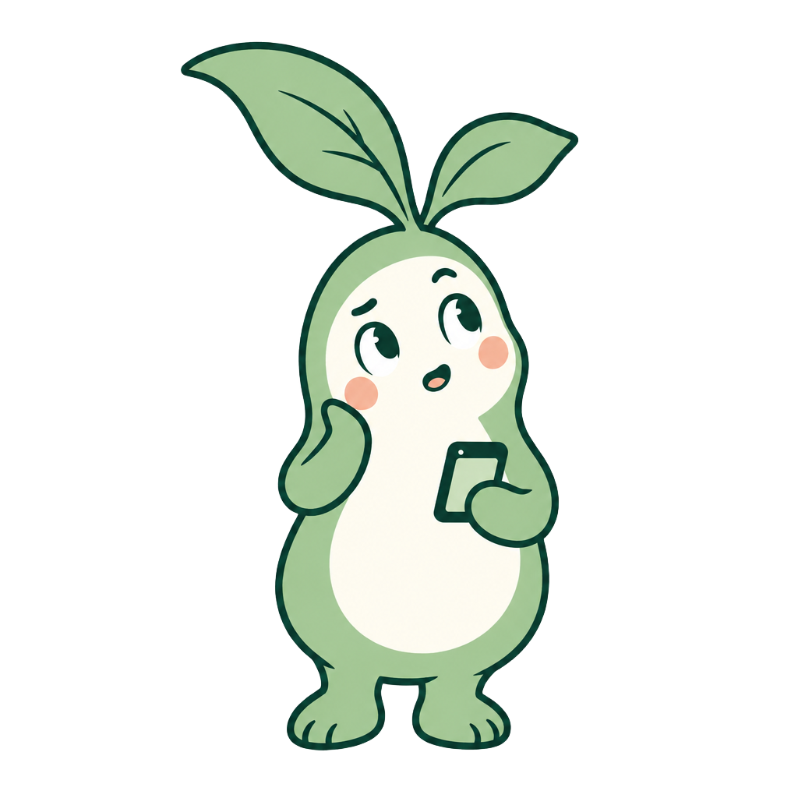
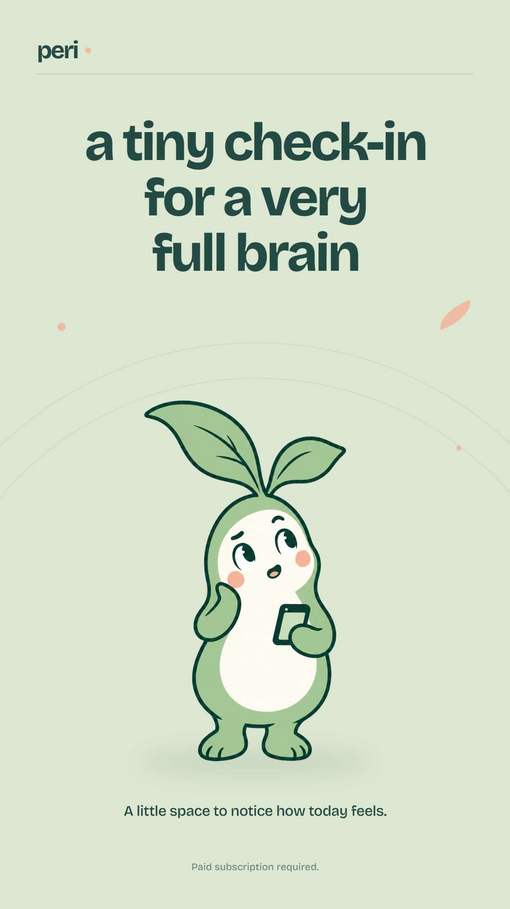
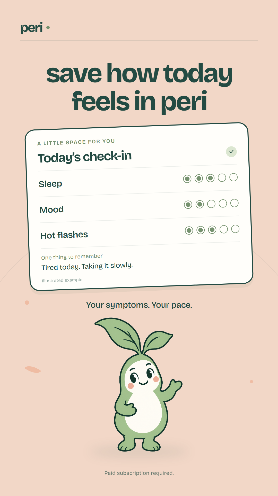

periPip · mascot social studio
Original sprout character, a two-image social post, and two vertical videos. Exported at 1080 × 1920. The check-in card is an illustration of the app’s existing symptom journaling flow.
The mascot

Pip · phone poseA tiny check-in companion.

Pip · guide poseYour symptoms. Your pace.
Masko animation source
Checkerboard shows the transparent background.
The two-slide post



